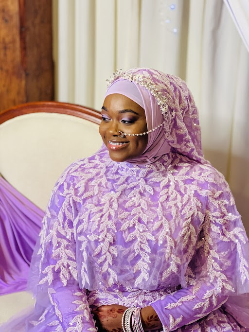
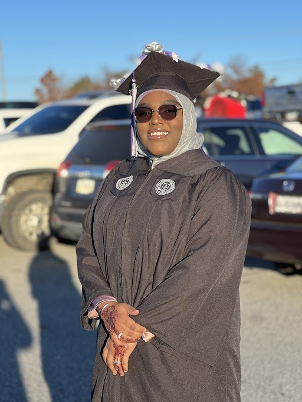
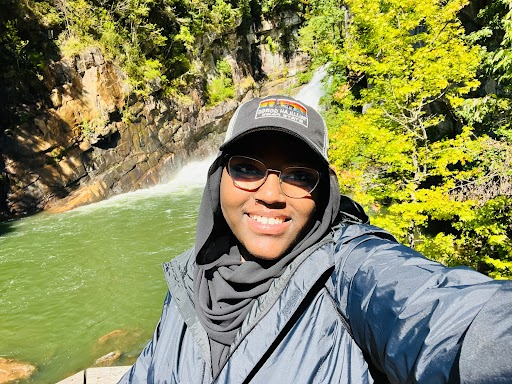

Hobbies and Interests
Makeup Artistry
Jaleelah has a deep passion for makeup artistry, especially in caputring the beauty of brides on their special day. Her talent lies in highlighting the diversity and intricacies of each indivisual's facial features.
Psychology
As a psychologist, Jaleelah enjoys understanding human behavior and helping others through her practice. This Interest complements her makeup artistry by allowing her to connect on a deeper level.
Nature Exploration
Finding inspiration in nature, Jaleelah enjoys spending time outdoors, which fuels her creativity and brings a sense of peace and relaxation.
